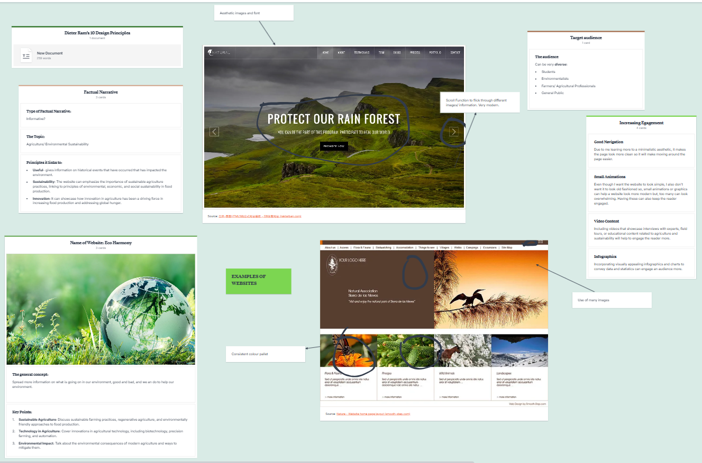
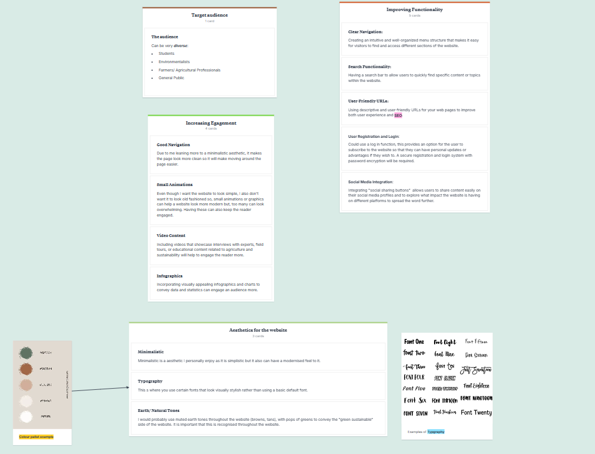
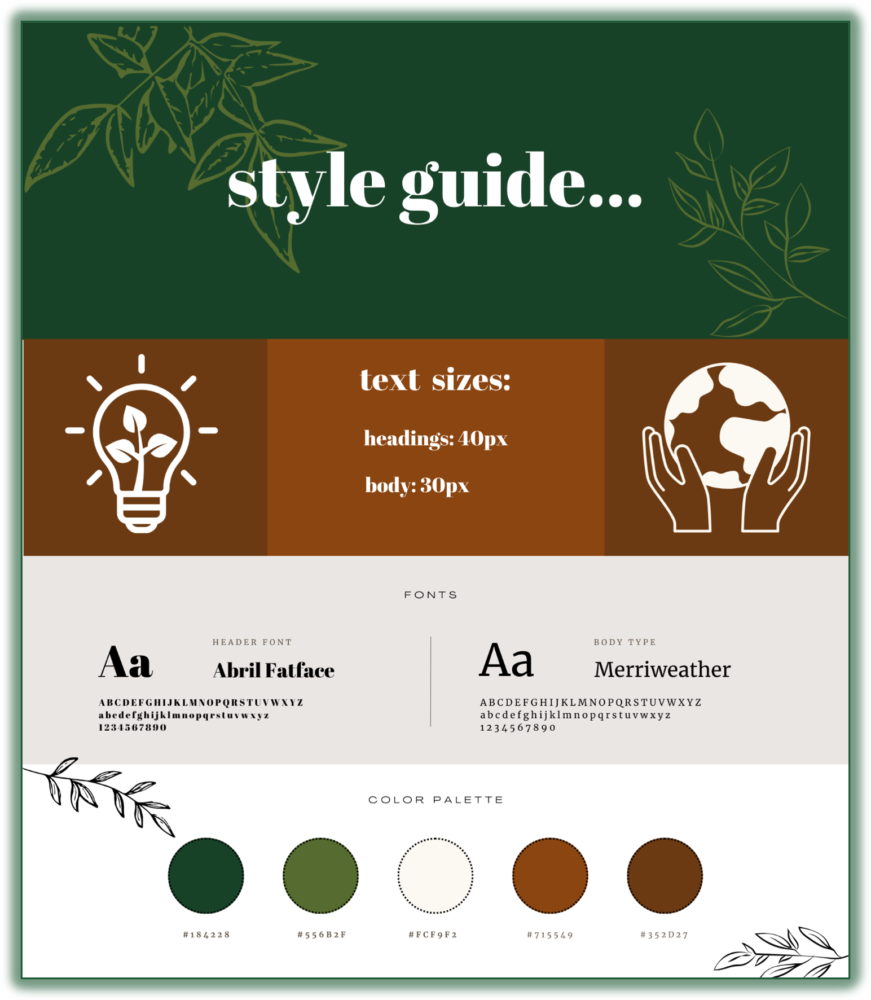
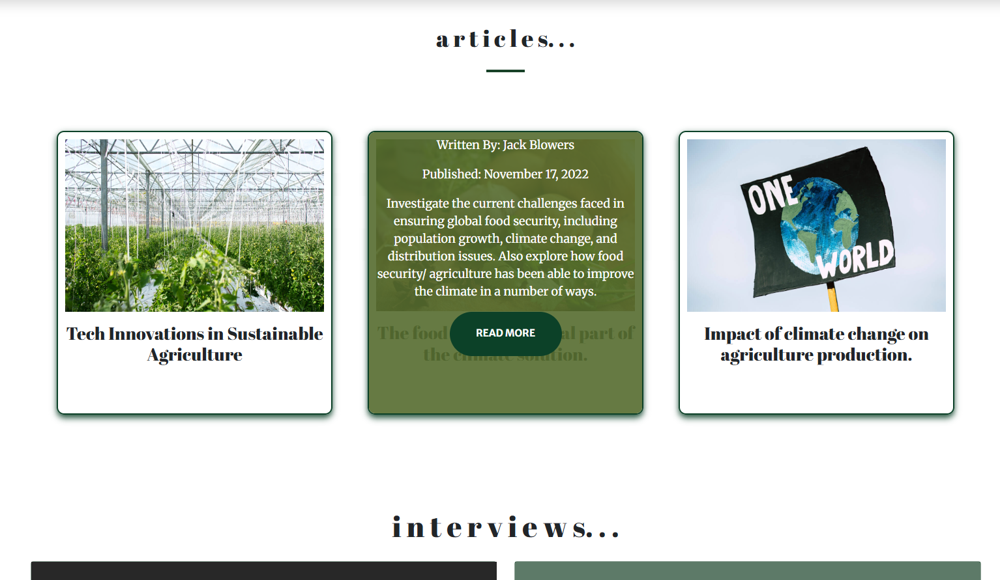
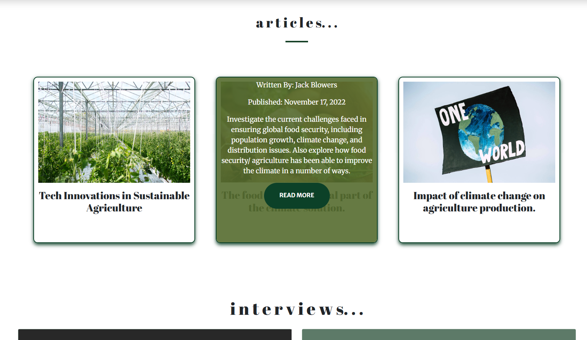

What was it?
This project was my first experience working with HTML, CSS, and Bootstrap. I chose to design an educational sustainability blog because it’s a topic I feel strongly about and one that deserves more accessible, engaging representation online.
The goal was to transform a starter Bootstrap template into something completely my own. This meant experimenting with code, pushing design boundaries, and learning how different components behaved. Although it felt overwhelming at first, I was determined to explore the possibilities and build a website that communicated environmental topics in a clear and visually appealing way.
- Project: Introduction to Design
- Tools: Figma, VSCode, Photoshop
- Date: 2023/24
The Challenge
The biggest challenge was learning the fundamentals of HTML and CSS for the first time. Understanding structure, spacing, responsiveness, and how Bootstrap’s grid worked was initially overwhelming. Even small changes could break a layout, so I had to spend a lot of time experimenting, tweaking, and inspecting elements just to understand how everything connected.
I also struggled with perfectionism. If something was slightly misaligned or unresponsive, I would fixate on it for hours. This determination helped me learn quickly, but it also made time management difficult. A good example was the custom carousel: I adapted a Bootstrap carousel into a more creative layout, but it took far longer than expected and still lacked the final polish I envisioned. This taught me a valuable lesson about prioritising tasks and knowing when to move on.

Research and Design Highlights
Research
I analysed existing sustainability websites to understand how educational content is typically presented. This helped me decide to create a cleaner, more visual design with digestible information rather than long text-heavy pages. I also created moodboards, sitemaps, and early sketches to structure the site. Additionally, I started to explore my potential target audience and thinking about the functionality of my website.
Style Guide
I developed my first style guide. This was a process I was excited to explore and particpate in as I love putting colour palettes together and looking at different fonts. I chose to go with green/ earthy tones as they are associated with nature generally and it symbolises sustainability perfectly. It gave the site a calm tone which matched with the font I chose, Abril Fatface Sans-serif Font. The font was versitle, readable, accessible and had a modern, clean aesthetic.
Design Process
Wireframes

I developed low-fidelity wireframes focusing on clarity, hierarchy, and consistent navigation across all five pages: Home, Agriculture, Farming Practices, Articles/Interviews, and Events.
Testing

I tested the site across different screen sizes using responsive tools. This highlighted issues with scaling, spacing, and some hover interactions. I also had a peer test my site on a different internet platform to see how it responds, the feedback let me know to look further into the contrast of my content.
Final Design
 

Video Walkthrough
Key Outcomes
- Developed a functional five-page educational website using Bootstrap, adapting templates and code snippets into a personalised design.
- Gained a strong understanding of HTML/CSS fundamentals, debugging, and responsive layout design.
- Improved time-management skills and learned to prioritise essential features over perfecting minor details.
- Created engaging interactive elements, including a customised carousel and various hover effects.